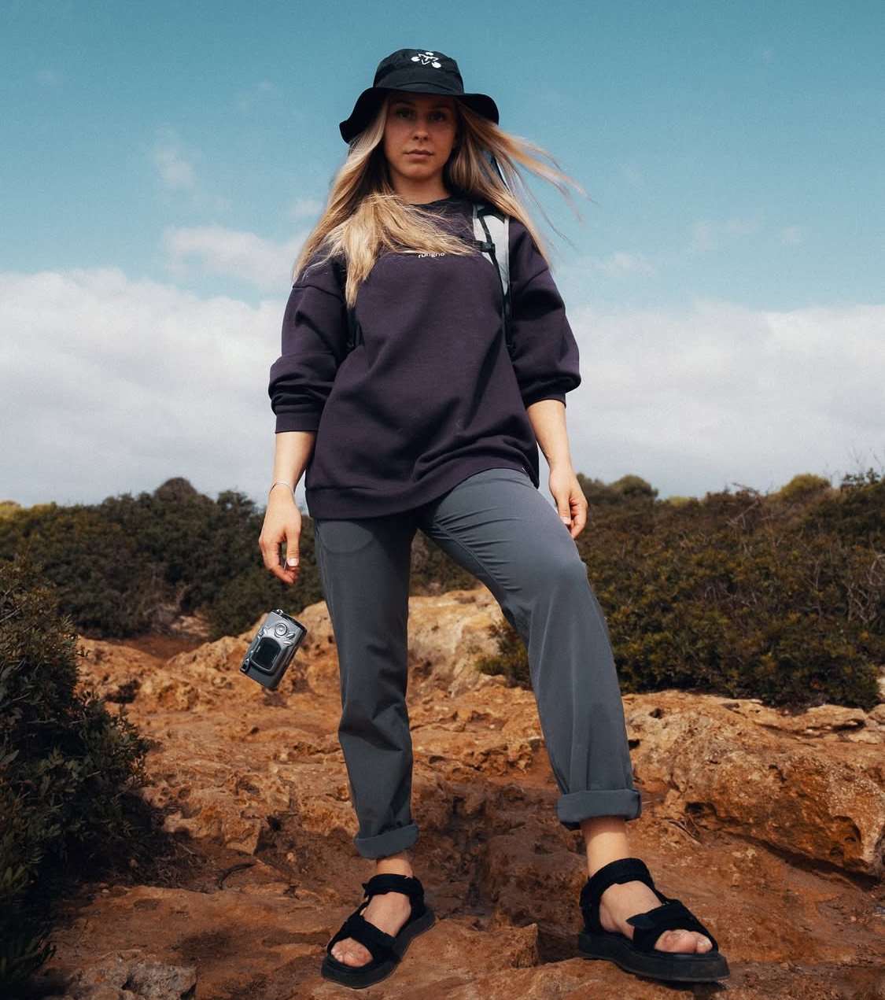

Atteindre de Nouveaux Sommets : Comment Rungne Chalk a Transformé Mes Séances d'Escalade
Salut à tous les grimpeurs (et ceux qui, comme moi, aiment se challenger) !
L'escalade, pour moi, ce n'est pas juste un sport, c'est une passion, une méditation en mouvement. Chaque prise, chaque mouvement est une danse avec la gravité. Mais il y a un élément souvent sous-estimé qui fait toute la différence entre une session frustrante et une séance où l'on se sent invincible : la prise. Et non, je ne parle pas seulement des prises sur le mur, mais de ma prise sur elles !
J'ai récemment eu l'occasion de tester la craie Rungne, et laissez-moi vous dire que cela a été une véritable révélation pour mes sessions d'escalade.
Le Grip, Cet Héro Méconnu
Avant Rungne, ma routine craie était assez basique. J'utilisais ce que j'avais sous la main, sans trop me poser de questions. Mais j'ai vite réalisé que la qualité de la craie a un impact direct sur la confiance et la performance. Combien de fois ai-je glissé sur une prise critique, non pas par manque de force, mais à cause d'une adhérence insuffisante ? Trop souvent !
Mon Expérience Rungne : La Différence est palpable
Dès la première application de la craie Rungne, j'ai senti la différence. Sa texture est incroyable, elle adhère instantanément et uniformément à la peau, créant cette sensation de "grip" parfait que l'on recherche tant.
J'ai notamment mis Rungne à l'épreuve lors de ma dernière session sur un bloc particulièrement exigeant, un 7A+ que j'essayais de débloquer depuis des semaines. La section clé impliquait de petites réglettes très fuyantes. Habituellement, mes doigts commençaient à transpirer et à glisser au bout de quelques secondes, me forçant à redescendre.
Avec la craie Rungne, j'ai ressenti une adhérence constante et fiable. Mes doigts restaient secs et accrochés, me permettant de me concentrer pleinement sur ma technique et mon équilibre, sans la distraction de la peur de glisser. Résultat ? J'ai non seulement passé la section difficile, mais j'ai aussi réussi à enchaîner le bloc complet ! C'était un sentiment de pure réussite, et je sais que la craie Rungne y a joué un rôle majeur.
Ce que j'apprécie le plus, c'est sa longue tenue. Pas besoin de se re-craier toutes les deux minutes, ce qui est un vrai plus quand on est en plein enchaînement ou sur une voie longue. Elle minimise aussi la poussière, ce qui est agréable pour l'environnement de la salle et pour mes poumons !
Pour Qui Est Rungne Chalk ?
Que vous soyez un grimpeur aguerri cherchant à optimiser chaque détail de votre performance, ou un débutant qui veut simplement se sentir plus en sécurité sur les prises, je ne peux que vous recommander de tester Rungne Chalk. Une bonne craie, c'est la fondation d'une bonne prise, et une bonne prise, c'est la clé pour libérer votre potentiel sur le mur.
Si vous êtes curieux, n'hésitez pas à jeter un œil à leur collection. Vous pourriez bien y trouver votre prochain compagnon d'escalade !
Découvrez la gamme Rungne Chalk ici !
Et vous, quelle est votre expérience avec la craie d'escalade ? Avez-vous une marque préférée ou des astuces pour un grip optimal ? Partagez vos pensées en commentaires !
Bonne grimpe à tous !
[Votre Nom / Nom de votre blog]
